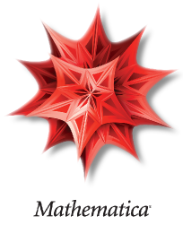

Mathematica (1998 - 2004)¶
Mathematica fue el primer lenguaje en el aprendí a programar, gracias al excelente curso que por pocos semestres ofreció el difunto Profesor Jürgen Tischer en la Universidad del Valle. Viéndolo en retrospectiva, quizá no fue el mejor lenguaje con el que empezar, pues Mathematica le oculta al programador la gran mayoría de conceptos técnicos que son indispensables en su trabajo (tipos y estructuras de datos, compilación, etc). Sin embargo, esto representó una gran ventaja para mí, pues me permitió concentrarme en la programación de modelos computacionales, sin tener que preocuparme por lo demás. La gran ventaja de Mathematica es que hace que sea un enorme placer escribir programas científicos, pues no sólo cuenta con un lenguaje compacto y fácil de aprender, sino que además involucra el uso de notebooks de trabajo, en los cuales se pueden incluir gráficas, texto y fórmulas científicas junto al código. Todo esto, soportado por su inigualable sistema de documentación, permite desarrollar programas de gran complejidad en poco tiempo y sin mucho esfuerzo. Con Mathematica realicé mi tesis de pregrado y más adelante decidí crear un paquete para mejorar las capacidades de resaltado de los notebooks. |  |